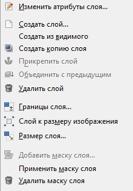
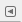

Интерфейс редактора GIMP
На иллюстрации ниже представлено типовое расположение окон GIMP для эффективной работы.
Интерфейс состоит из нескольких характерных элементов, а именно:
• выпадающие меню;
• панель инструментов;
• диалоговые панели;
• рабочая область.
Выпадающие меню
Выпадающие меню — универсальный элемент интерфейса, характерный практически для любой программы.
Здесь собраны все основные опции и средства работы над изображением. Существенным плюсом таких меню является то, что инструменты и средства здесь четко структурированы по группам. Например, в меню Фильтры вы найдете список всех возможных фильтров, в меню Изображение — список опций преобразования всего изображения, в меню Выделение — опции по преобразованию выделения и т. д.
Как правило, некоторые из пунктов выпадающих меню дублируются на дополнительных панелях — других элементах интерфейса программы — для обеспечения удобного и быстрого доступа к часто употребляемым инструментам и функциям. В то же время многие пункты меню больше нигде не встречаются. Кроме того, некоторые из опций данного элемента интерфейса дублируются применением «горячих клавиш».
Таким образом, выпадающие меню представляют собой наиболее полный комплект инструментов и опций программы, четко распределенных по группам в зависимости от их действия и сферы применения.
Панель инструментов
Главная панель инструментов содержит набор кнопок с пиктограммами для выбора инструментов и располагается в левой части интерфейса программы и является одним из часто употребляемых элементов интерфейса.
. Также может содержать цвета переднего плана и фона; кисть, шаблон и градиент; пиктограмма активного изображения.
Эта панель состоит из двух основных частей: верхняя содержит список разнообразных инструментов, а нижняя — совокупность параметров и настроек выделенного инструмента. Например, если в верхней части вы выделите инструмент Кисть, то в нижней части появится совокупность настроек кисти.
Таким образом, на данной панели можно выбрать и настроить любой необходимый инструмент, подготовив его к работе. Разные дополнительные элементы можно показать с помощью меню Правка → Параметры → Панель инструментов.
Панель инструментов можно поместить в любое место интерфейса программы. Для передвижения панели подцепите курсором ее верхнюю часть, где располагается название, и, не отпуская кнопки мыши, передвиньте курсор.
При наведении курсора на какой-либо из углов панели он принимает форму диагональной стрелочки: теперь можно редактировать габаритные размеры панели.
Панель инструментов — единственная часть интерфейса программы, которую нельзя продублировать или закрыть.
Совет
Для того чтобы узнать название того или иного инструмента, просто наведите на него курсор: небольшая подсказка с названием и кратким описанием его действия появится буквально через секунду. В подсказке также часто показана клавиша быстрого доступа. Кроме того, в большинстве случаев для получения справки по этому элементу вы можете нажать клавишу F1, поместив перед этим курсор мыши над элементом.
Окно диалоговых панелей располагается в правой части интерфейса программы.
По стандартным настройкам обычно располагаются диалоговые панели Слои и Кисти. В верхней части каждой из этих панелей располагаются закладки, позволяющие открывать другие диалоговые панели. Так, над панелью Слои располагаются закладки вызова панелей Каналы, Контуры и История действий, а над панелью Кисти располагаются кнопки вызова панелей Текстуры и Градиенты.
Наиболее полный список всех возможных диалоговых панелей можно обнаружить в выпадающем меню Окна в подменю Панели.
У каждого прикрепляющегося диалога две области прикрепления: соединительные планки и область закладки прикрепления. В панели область закладки прикрепления занимает всё окно.
Таким образом, мы располагаем множеством дополнительных диалоговых панелей, которые могут быть вызваны по мере необходимости, в зависимости от выполняемой работы. Каждая из них содержит совокупность однородных инструментов и опций, позволяющих выполнять определенную работу. Например, опции панели Слои позволяют полноценно оперировать слоями, создавать новые, удалять их и т. д., опции панели Кисти позволяют работать с внешним видом штриха кисти, менять его форму и интервал действия.
Подсказка
Наиболее часто используемые панели выведены на обзор пользователя в качестве закладок, а остальные расположены в удаленном выпадающем меню, чтобы не загромождать интерфейс.
Рабочая область
Рабочая область занимает большую площадь интерфейса программы. После первого запуска она представляет собой пустую поверхность с большим изображением лисенка Вильбера — талисмана программы GIMP — в левом нижнем углу. Именно в рабочей области будут рас- полагаться обрабатываемые изображения. Их может быть несколько, их можно раскидать по рабочей области, но одновременно работать можно лишь с одним изображением. Несколько открытых изображений удобно использовать, например, при осуществлении монтажа. Окно изображения содержит меню главных команд GIMP (Файл, Правка, Выделение, …), которое также можно вызвать нажатием в окне правой кнопки мышки.
Рабочая область не содержит никаких элементов управления, однако, если перенести на нее какой-либо графический файл, то он автоматически откроется в GIMP. Нейтральный цвет области способствует концентрации внимания пользователя непосредственно на открытых изображениях.
При нажатии на правую кнопку мыши в пределах рабочей области появляется меню, пункты которого полностью дублируют пункты выпадающих меню. Это сделано для ускорения доступа к часто употребляемым опциям выпадающих меню.
Замечание
Если расположение окон в GIMP утеряно, то его можно легко вернуть с помощью команды Окна → Недавние прикрепляющиеся диалоги.
Чтобы добавить, закрыть или отсоединить вкладку от панели, нажмите на кнопку с треугольником в верхнем правом углу диалога. Это откроет меню закладок. Выберите Добавить вкладку, Закрыть вкладку или Отсоединить вкладку.
Внимание! Пропавшая панель
Если вы закроете "Панель инструментов" и "Главное окно" ничего неординарного и отличающегося от других программ не произойдет. А вот при закрытии окна "Слои, Каналы, Контуры" на экране остаются другие, а это вовсе пропадает, даже при перезапуске GIMP.
Чтобы вернуть окно GIMP "Слои, Каналы, Контуры" зайдите в "Главном окне": Правка - Параметры. Перед вами появится такое окно:
Переходите в раздел "Поведение окон" и нажимаете на кнопку Восстановить исходную позицию окон. При следующем перезапуске GIMP, все три панели будут на месте.